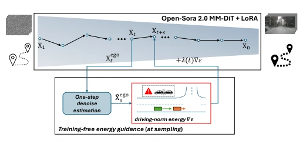
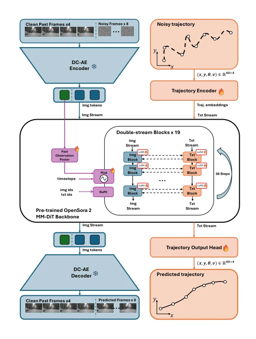
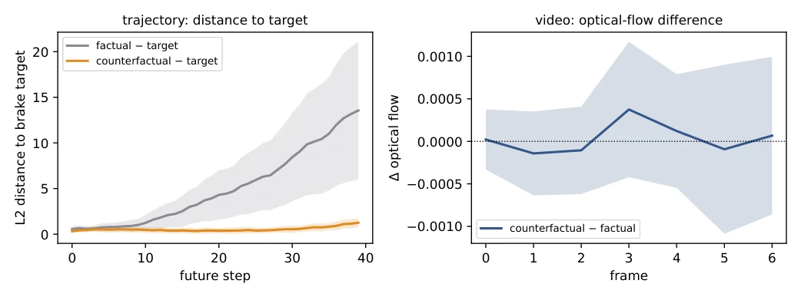
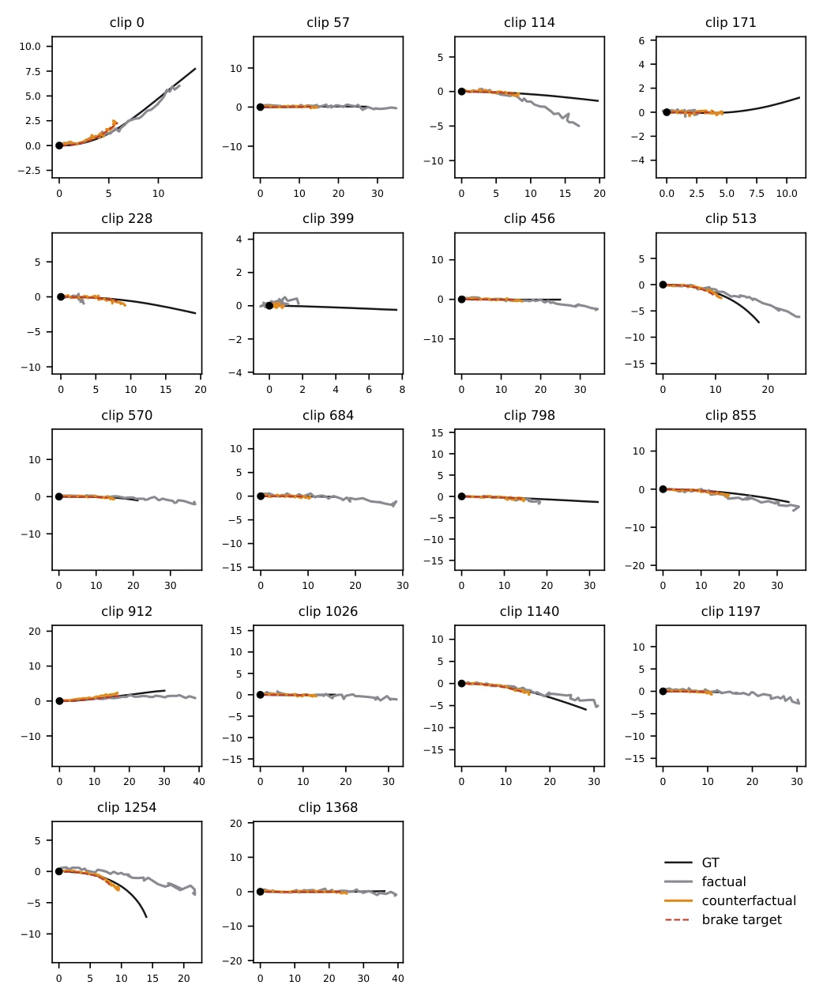
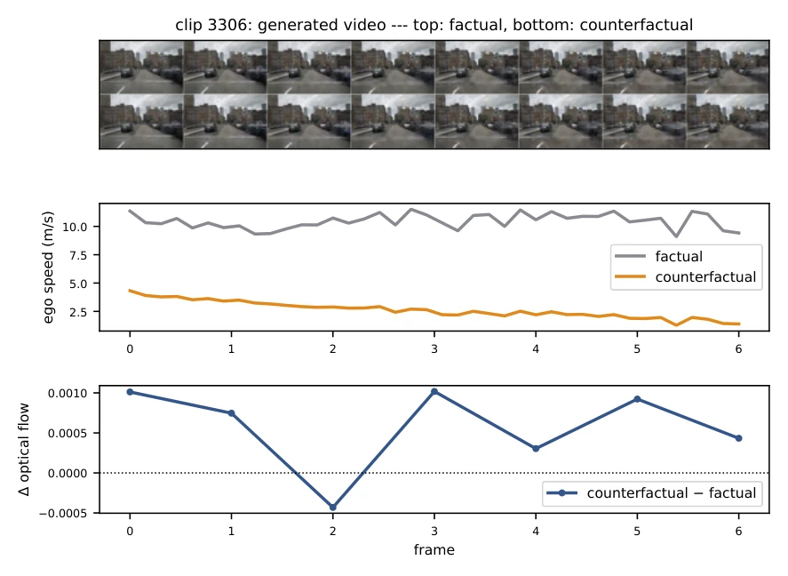

This paper attempts to solve the control challenges of world models with the magic of training-free methods, which sounds very promising, akin to adding a God's hand to autonomous driving without needing to retrain the model. The authors employ energy guidance to forcibly steer the ego-vehicle trajectory during sampling, indeed making the trajectory obedient, such as simulating braking. However, ironically, the video frames show no reaction at all, like a driver stepping on the brake while the car continues to coast due to inertia. This exposes the coupling defect of the current dual-stream architecture; the video stream simply does not perceive the pain of the trajectory stream. Although a repair solution is proposed, the current end-to-end controllability remains merely a semi-finished product. This operation of modifying only the plan but not the visual output is obviously not sufficiently robust for safety-critical tasks, after all, no one dares to trust an autonomous driving system where a brake command alters only the trajectory but not the video, which is like navigation changing the route while the car still spins in place.
Existing driving world models such as GAIA-1 and Vista can generate realistic scenes, yet exhibit poor controllability. They either require fine-tuning the backbone network or rely on map layouts constructed during training, involving high costs and inability to dynamically adjust rules during deployment. Training-free guidance such as FreeDoM and TFG are effective in diffusion models, but directly applying them to world models that jointly generate video and trajectory remains blank. The authors question whether control must depend on training, attempting to inject driving norms during sampling to avoid expensive knowledge coupling. Existing methods like Drive-WM require post-generation selection, while CTG requires compiling rules; this paper aims to achieve real-time rule injection without retraining, exploring whether all control knowledge can be added via energy functions during sampling, thereby breaking the barriers between training and deployment.
Based on the Open-Sora 2.0 MM-DiT backbone network, adopting Rectified Flow. The model is frozen, fine-tuned only through LoRA. The core innovation lies in the sampling stage, calculating the energy function based on the predicted clean trajectory and correcting the velocity field through gradient descent. The energy function simulates braking targets. On the data flow, the video stream and trajectory stream are jointly denoised in Double-stream Blocks. Specifically, in each sampling step, utilizing formula estimation, the energy gradient is calculated and converted into a velocity correction term. To prevent early sampling instability, asymmetric scheduling and gradient clipping are adopted. This method avoids backpropagation through the backbone network, incurs extremely low computational overhead, and allows dynamic adjustment of energy weights during deployment, achieving true training-free control.

Fig. 1. Overview. A frozen video world model (Open-Sora 2.0 MM- DiT + LoRA) jointly denoises future video and an ego trajectory conditioned only on observed past without agent or map at training. Driving norms enter at sampling as energies on the clean ego estimate ˆx0 and are applied as a velocity correction to the ego stream. We study the question of whether the generated video is also steered through the backbone’s joint self-attention.

Fig. 2. The MM-DiT backbone at sampling time without energy guidance. The observed past and the noised future frames are encoded by the frozen DC- AE into image tokens; the noised ego trajectory (x, y, θ, v) enters the planning (text) stream. The two streams are denoised jointly across the 19 double-stream blocks over 50 steps, modulated by the timestep and the past-observation pooler, with RoPE positional ids, and then decoded into the predicted future frames and the predicted trajectory. The model is post-trained unguided as a driving world model: frozen modules are marked ; modules adapted with LoRA or trained from scratch are marked \.
Using the nuScenes dataset. Comparing 35 clips of unguided and braking energy guided. Metrics include trajectory L2 distance and optical flow difference. Results show the trajectory successfully deviated to the target, but the video optical flow difference is nearly zero, proving the video did not follow trajectory changes. This indicates that in the current architecture, the joint self-attention of the trajectory stream and video stream in Double-stream Blocks is insufficient to transmit control signals. The authors plan to solve the cross-stream coupling problem by reconnecting Single-stream Blocks. Experiments verified trajectory controllability, but revealed video generation blind spots, pointing the direction for subsequent architecture improvements, and also reminding us that world model control is not merely a problem of trajectory planning.

Fig. 3. The trajectory steers, the video does not. Across 35 sampled clips at λ=40 (mean ± std). For each clip, we sample the platform twice from identical noise - unguided (factual) and with a counterfactual brake energy (counterfactual) - and compare. Left: L2 distance of each ego plan to the brake target per step; the counterfactual is driven to the target while the factual diverges. Right: per-frame optical-flow difference (counterfactual −factual), which sits at zero within the across-clip spread (shaded). The steered plan does not move the pixels. Detailed results for single clips and per-frame trajectory-video comparison are evaluated and shown in Section C.

Fig. 4. Per-clip BEV trajectories (1/2). All 35 usable sampled clips at λ=40. GT (black), unguided/factual (grey), counterfactual (orange), brake target (red dashed). The counterfactual plan tracks the braked target across clips.
其他图片Other Figures

Fig. 6. One clip, aligned on frames. Top: ego speed - the counterfactual brakes hard while the factual holds speed. Bottom: per-frame optical-flow difference (counterfactual −factual), at zero: the trajectory steers but the video does not. (Plan steps are mapped onto the video-frame axis for alignment.)